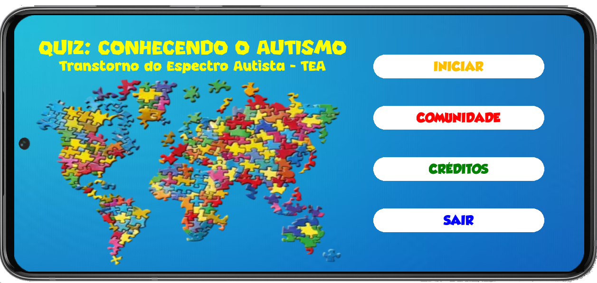

O QUE É O AUTISMO
O Transtorno do Espectro do Autismo (TEA) reúne desordens do desenvolvimento neurológico presentes desde o nascimento ou começo da infância. São elas: Autismo Infantil Precoce, Autismo Infantil, Autismo de Kanner Autismo de Alto Funcionamento, Autismo Atípico, Transtorno Global do Desenvolvimento sem outra especificação, Transtorno Desintegrativo da Infância e a Síndrome de Asperger. Segundo o Manual Diagnóstico e Estatístico de Transtornos Mentais DSM-5 (referência mundial de critérios para diagnósticos), pessoas dentro do espectro podem apresentar déficit na comunicação social ou interação social (como nas linguagens verbal ou não verbal e na reciprocidade socioemocional) e padrões restritos e repetitivos de comportamento, como movimentos contínuos, interesses fixos e hipo ou hipersensibilidade a estímulos sensoriais. Todos os pacientes com autismo partilham estas dificuldades, mas cada um deles será afetado em intensidades diferentes, resultando em situações bem particulares. Apesar de ainda ser chamado de autismo infantil, pelo diagnóstico ser comum em crianças e até bebês, os transtornos são condições permanentes que acompanham a pessoa por todas as etapas da vida.
ONG institutoinclua.com.br ONG fada.orgMissão, visão e valores
Para seguirmos com nossa missão, temos muito claro os valores que regem nossa trajetória.
Queremos conscientizar as pessoas sobre o transtorno do espectro autista,
através do site e aplicativo.
Pelos nossos projetos, também divulgar os hábitos de sustentabilidade.
faça visão e valores voltadas para o autismo, sutentabilidade e criação de projetos web
Claro, aqui está uma proposta de visão e valores que combina autismo, sustentabilidade e criação de projetos web:
Nossa visão: Ser uma referência global na inclusão e empoderamento de pessoas com autismo, através de soluções web sustentáveis e inovadoras, que promovam um impacto social positivo e a preservação do meio ambiente.
Nossos valores:
Inclusão e Diversidade: Promover um ambiente acolhedor e diversificado, onde pessoas com autismo possam desenvolver suas habilidades e talentos em um ambiente de respeito e valorização das diferenças.
Sustentabilidade: Adotar práticas sustentáveis em todas as etapas dos nossos projetos, desde o desenvolvimento até a implementação, buscando reduzir impactos ambientais e promover a consciência ecológica.
Inovação: Buscar constantemente novas tecnologias e metodologias que possam melhorar a experiência e acessibilidade de nossas soluções com desenvolvimento web, aplicativos e inovações, garantindo que sejam intuitivas e eficazes para todos os usuários.
Empoderamento: Capacitar pessoas com autismo para que possam participar ativamente na criação e desenvolvimento de projetos web, oferecendo treinamento e suporte necessários para seu crescimento profissional e pessoal.
Impacto Social: Desenvolver projetos que não só atendam às necessidades de nossos usuários, mas que também contribuam para a melhoria da comunidade e sociedade como um todo.
Projetos
Além de termos o aplicativo para divulgação do saber sobre o autismo, temos como visão macro a divulgação da sustentabilidade, através da nossa página e link de vídeos.

Tecnologias utilizadas: